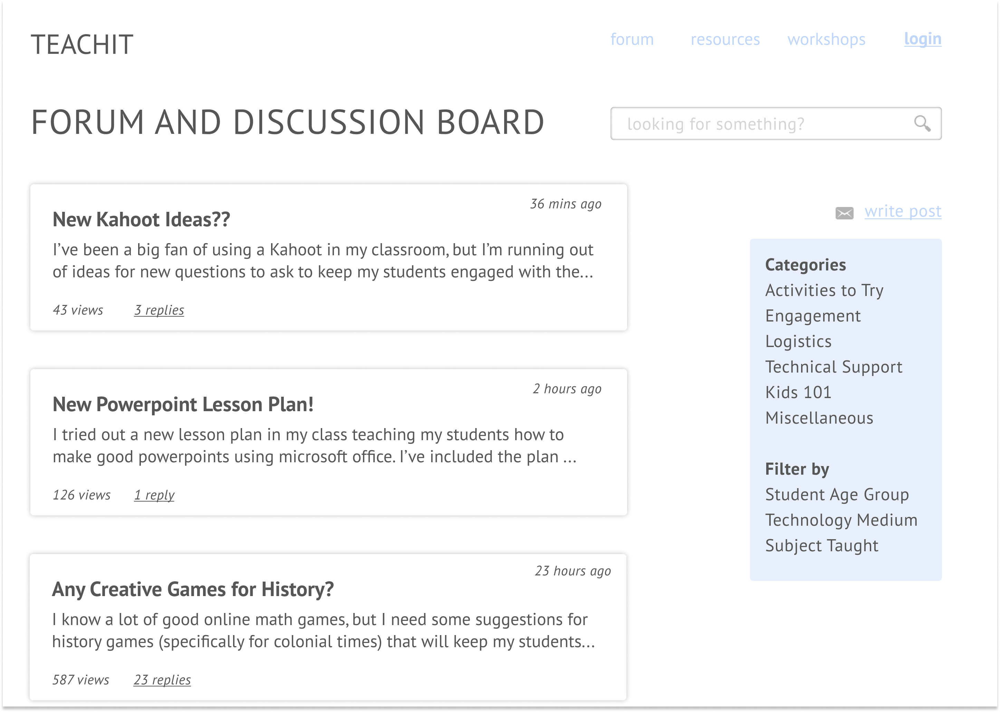
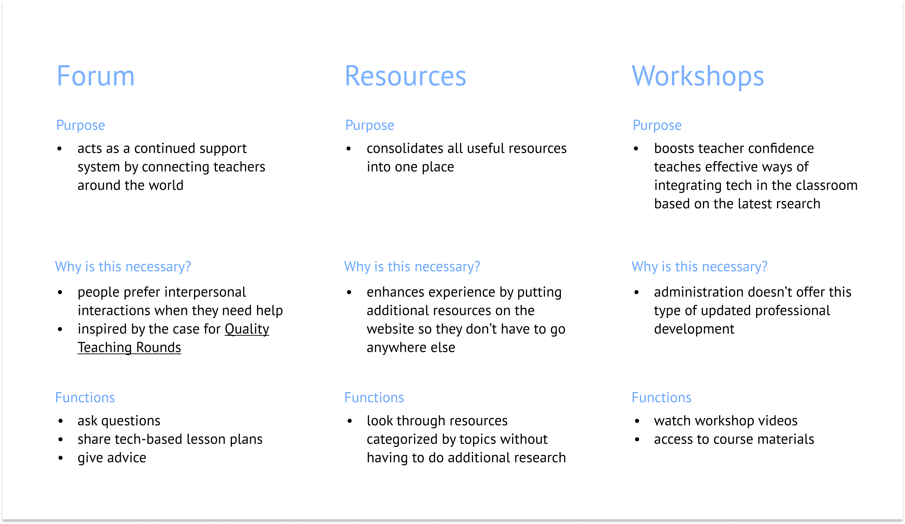
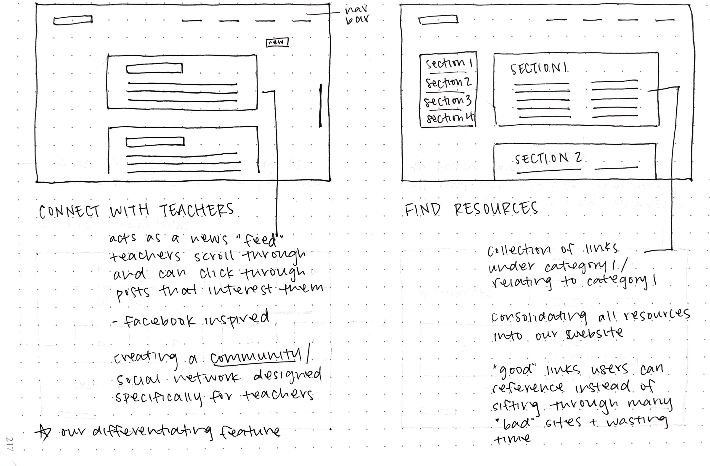

I worked with undergraduate students Shalini Rao and Mashia Mazumder on this semester-long design research project. We wanted to create a solution for the problem surrounding the improper integration of new edtech in classrooms due to a lack of continued support from district administration. I contributed to the preparatory research, user feedback and design of the product.

PROBLEM STATEMENT
Teachers are not effectively implementing new technology in their classrooms, which has serious repercussions for their students.
Although administration has the resources to provide teachers with new technology, they are not allocating enough resources to teaching teachers how to use that technology. School systems falsely rely on the excitement surrounding new technology rather than trying to create a lasting solution using that technology.
PROBLEM SCOPE
Our target audience is K-12 teachers employed in low-income areas in the United States, whose respective school can supply students with technology such as computers. K-12 teachers in lower-income areas often are not provided with the instruction and support on how to best integrate the technology they are given into their curriculum.Choosing to "implement technology" in trivial ways by having students type out their homework or do tasks that repeat traditional practices does not harness the full potential of educational technologies. Teachers are not being trained on what real technology based learning can look like and they have not been shown the numerous other ways that students can use technology in the learning process, rather than just in assessments and assignments.
DEEPER PROBLEM UNDERSTANDING
Since our target audience consisted of teachers, specifically in low-resource areas, it was difficult to contact that exact audience for interviews or user testing. Instead, we broke down our target audience into what they are fundamentally: adults who had minimal experience with technology who then needed to become more skilled for their jobs.
What we wanted to know: What resources did they have/use when pushed to transition into digital literacy?
Their responses may not be an accurate representation of our target audience. However, it was evident that both users preferred to talk to people instead of reading resources or books. This informs the motivation behind our forum - interpersonal interactions provide better support than the one way interaction between a teacher and a webpage.
SOLUTION OVERVIEW
Based on all our primary and secondary research, we settled on three main features:

EDUCATIONAL GOALS AND ASSESSMENT
A large majority of our efforts this semester was put toward performing research on why such a platform should exist, rather than the platform itself. We created our prototype to demonstrate how our findings from research and interviews played into the design decisions for the features and layout of the platform.
Goals
Assessment
There is no formal assessment of the teachers’ skills - we would actually assess the impact of our platform by looking at the performance of their classrooms before and after the use of the platform. The platform should have a “trickle down” effect on the students’ learning as a result of helping and empowering the teachers.
DESIGN AND STORYBOARDS
The storyboards below demonstrate different ways teachers will be able to utilize our final product.
Lesson Plan Inspiration Teachers are able to look through creative lesson plans other teachers post when they want to try something new in the classroom.

Sharing Lesson Plans Teachers can share lesson plans that worked really well in their classroom.

Seeking Help Within the Classroom Teachers can seek advice on specific problems they're having.

Utilizing Online Resources and Workshops When struggling to create new technology-based lesson plans, teachers can watch our online workshops and consolidated list of resource links to guide them.

WIREFRAMING AND PROTOTYPING


FORMATIVE ASSESSMENT AND REDESIGN
It was difficult to get people in our target audience to conduct user testing, so we did user testing with our peers. We briefed them on the purpose of the platform, and were told to think aloud as they navigated through our prototype. These are the comments they made about the prototype:
Comments from User Testing
Future Design Considerations
PERSONAL TAKEAWAYS
REFERENCES
Canough, Jeanne, "Effective Implementation of Technology" (2013). Education Masters. Paper 261.
Gore, Jenny. “Here's How to Support Quality Teaching, with the Evidence to Back It.” Phys.org, Phys.org, 27 July 2018, phys.org/news/2018-07-quality-evidence.html.
American Physiological Society. “Online Professional Development Boosts Teachers' Confidence, Knowledge.” Phys.org, Science X Network, 21 June 2018, phys.org/news/2018-06-online-professional-boosts-teachers-confidence.html.